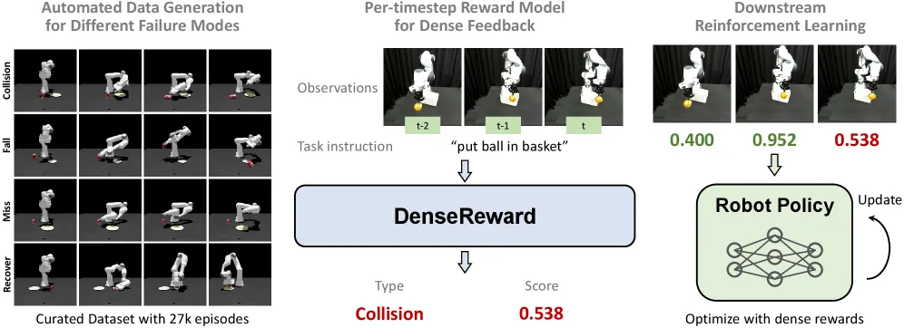
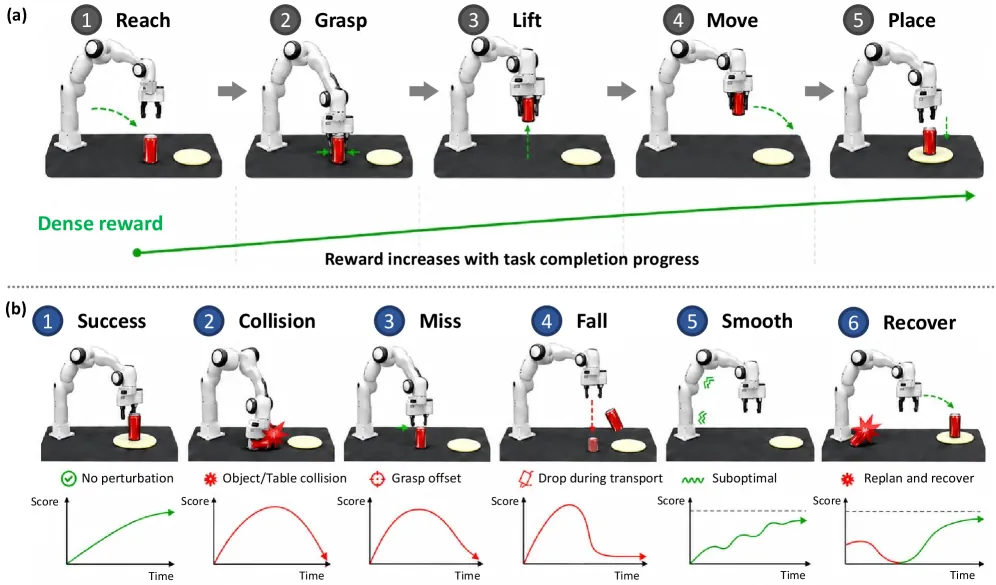
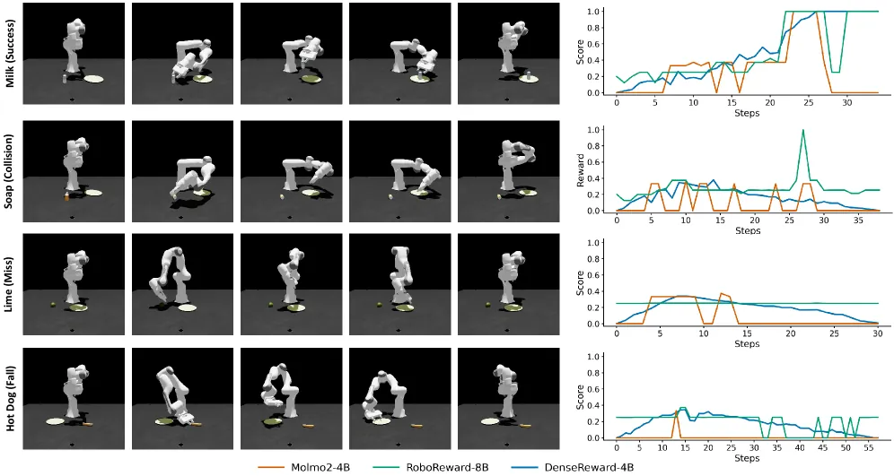
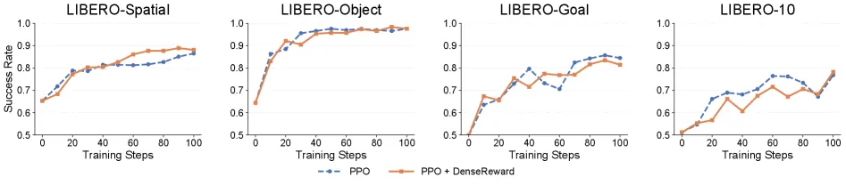

机器人 RL 的瓶颈在于缺乏可靠、能提供稠密反馈的 vision-language 奖励模型。DenseReward 用仿真自动合成物理真实的失败轨迹（无需人工标注），训练出一个从视觉观测 + 语言指令预测逐帧（frame-level）奖励的模型，在 sim 与真机操作上均优于通用 VLM 与现有机器人奖励模型，并为下游 MPC 与 RL 提供有效引导。
Reinforcement learning 有望突破 imitation learning 的上限，但落地受制于缺乏可靠的 vision-language 奖励模型。论文点出两个关键难题：
"Two key challenges remain: acquiring diverse failure data at scale and obtaining fine-grained reward signals beyond sparse trajectory-level success labels."

DenseReward 同时解决两个难题：一条自动失败数据生成 pipeline 在仿真中合成物理真实的失败轨迹（无需人工标注），再据此微调出一个输出逐帧标量奖励的 vision-language 奖励模型。

操作被结构化为五个 canonical phase；通过对特定阶段注入针对性扰动，自动合成六类轨迹（阶段边界处还有 validity filtering 剔除物理无效样本，如 miss 试验中的意外抓取）：
| 模式 | 描述 | 扰动方式 |
|---|---|---|
| Success | 完整无扰执行，奖励单调上升 | 无 |
| Collision | 与环境/物体碰撞，奖励呈"山形" | 关闭碰撞规避 |
| Miss | 抓取失败，奖励先升后降 | 偏移抓取目标位姿 |
| Fall | 搬运中掉落，奖励呈"山形" | Move 阶段随机旋转扰动 |
| Smooth | 次优运动执行，奖励被惩罚 | 关节注入 Gaussian 噪声 |
| Recover | 碰撞后成功重规划，奖励先降后恢复 | 先碰撞再重规划路径 |
以 Qwen3-VL-4B-Instruct 为底座微调。输入 task instruction、当前观测与历史帧；输出每个时刻一个 [0,1] 区间、保留三位小数的标量奖励。区别于只在整条轨迹末端给单一标签的做法：
"Unlike current reward models that assign a single label p∈[0,1] at the end of an entire trajectory, we aim to learn reward signals at every timestep throughout execution."
训练：LoRA 微调，rank 16，10 epochs，8× H100，batch size 32。数据集共 27k episodes / 7,560,942 frame-level samples，混合 DROID(2,986)、Isaac Sim(12,481)、RoboSuite(9,287)、LIBERO(1,825)。
评测覆盖稠密奖励预测精度（MAE）、下游 MPC、仿真 RL（π₀ + PPO on LIBERO）与真机 RL（DSRL on Franka）。
| Model | Overall | DROID | Isaac Sim | RoboSuite | LIBERO |
|---|---|---|---|---|---|
| Qwen3-VL-4B-Instruct | 0.289 | 0.532 | 0.285 | 0.195 | 0.478 |
| Molmo2-8B | 0.335 | 0.480 | 0.307 | 0.303 | 0.455 |
| Robometer | 0.366 | 0.521 | 0.328 | 0.345 | 0.468 |
| RoboReward-8B（次优） | 0.230 | 0.484 | 0.185 | 0.172 | 0.431 |
| DenseReward (Ours) | 0.081 | 0.259 | 0.081 | 0.051 | 0.044 |
DenseReward 在所有数据源上均取得最佳（best across all sources），整体 MAE 0.081，显著优于通用 VLM 与现有机器人奖励模型。

| Model | Can | Cup | Lemon | Avg |
|---|---|---|---|---|
| RoboReward-4B | 0.199 | 0.307 | 0.295 | 0.267 |
| VLAC-8B | 0.351 | 0.360 | 0.363 | 0.358 |
| DenseReward (Ours) | 0.219 | 0.181 | 0.288 | 0.229 |
DenseReward 平均距离最低（0.229）。注意在 Can 子任务上 RoboReward-4B（0.199）优于 DenseReward（0.219）——单项并非全胜，但整体最优。

作者计划将工作扩展到更复杂的操作，如 tool use 与 long-horizon tasks，暗示当前主要在相对短程、单物体的抓放类任务上验证。原文："We plan to extend this work to more complex manipulation, such as tool use and long-horizon tasks."
作者将"incorporating human preference feedback into the reward learning process"列为未来方向，以使稠密奖励模型"more general, scalable, and aligned with human expectations"——即当前奖励主要来自仿真合成信号，尚未纳入人类偏好。
失败模式由 Isaac Sim / RoboSuite 中针对性扰动合成，其多样性与真机失败分布的一致性取决于仿真与规划器（GraspNet、CuRobo）的覆盖范围；sim-to-real gap 可能影响真机泛化。
奖励模型基于 Qwen3-VL-4B-Instruct，训练用 8× H100；作为在线 RL / MPC 的逐帧打分器，其推理开销对高频控制回路的实时性可能构成约束。